Příklady
by Jiří Znamenáček
Úvod
L-systémy jsou obzvláště vděčné ve spojení se želví grafikou, ukažme si proto několik dalších příkladů obrázků vygenerovaných jejich pomocí.
I. Fraktální obrazce
První skupinu příkladů tvoří D0L-systémy bez zaznamenávání stavu želvy. Vesměs se jedná o příklady různých fraktálních obrazců (tedy obrazců vykazujících fraktální vlastnosti, to jest především soběpodobnost na různých úrovních přiblížení a neceločíselnou dimenzi).
Kochův ostrov
| abeceda $Σ$ | $\{F, +, -\}$ |
|---|---|
| axiom $ω$ | F-F-F-F |
| přepisovací pravidla $P$ | F → F-F+F+FF-F-F+F |
| úhel | 90 ° |
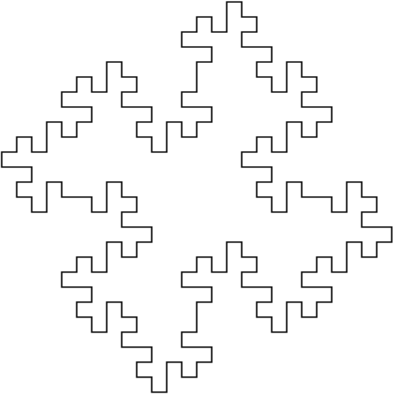
Jiný Kochův ostrov
| abeceda $Σ$ | $\{F, +, -\}$ |
|---|---|
| axiom $ω$ | F-F-F-F |
| přepisovací pravidla $P$ | F → F-FF--F-F |
| úhel | 90 ° |
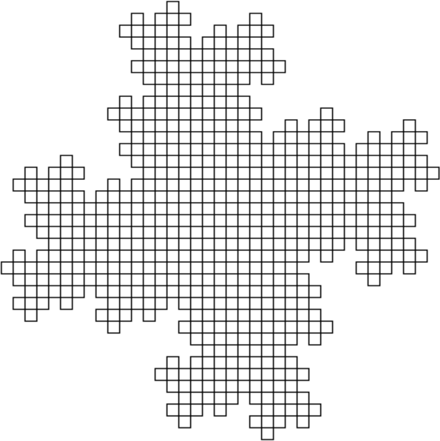
Kochovy čtverce
| abeceda $Σ$ | $\{F, +, -\}$ |
|---|---|
| axiom $ω$ | F-F-F-F |
| přepisovací pravidla $P$ | F → FF-F-F-F-F-F+F |
| úhel | 90 ° |
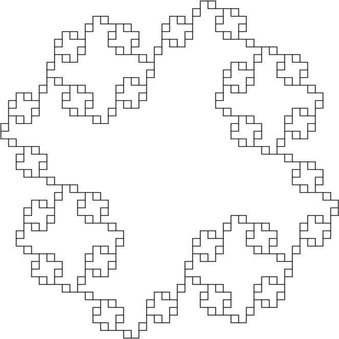
Kochův čtverec
| abeceda $Σ$ | $\{F, +, -\}$ |
|---|---|
| axiom $ω$ | F+F+F+F |
| přepisovací pravidla $P$ | F → FF+F-F+F+FF |
| úhel | 90 ° |
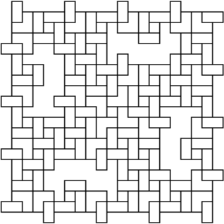
Jiný Kochův čtverec
| abeceda $Σ$ | $\{F, +, -\}$ |
|---|---|
| axiom $ω$ | F-F-F-F |
| přepisovací pravidla $P$ | F → FF-F--F-F |
| úhel | 90 ° |
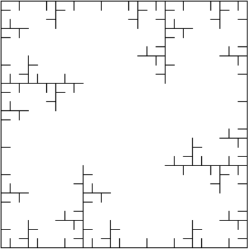
Ostrovy a jezera
| abeceda $Σ$ | $\{F, f, +, -\}$ |
|---|---|
| axiom $ω$ | F+F+F+F |
| přepisovací pravidla $P$ | F → F+f-FF+F+FF+Ff+FF-f+FF-F-FF-Ff-FFF f → ffffff |
| úhel | 90 ° |
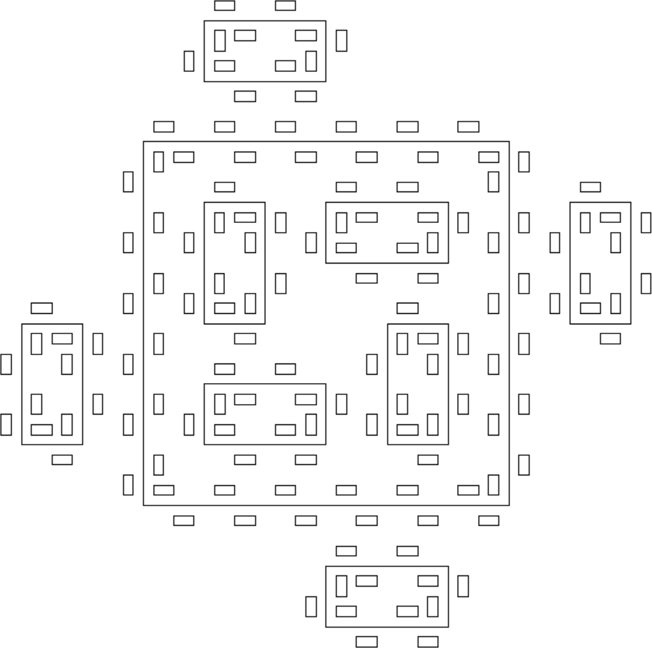
Sierpińského fraktál
| abeceda $Σ$ | $\{A, B, +, -\}$ |
|---|---|
| axiom $ω$ | A |
| přepisovací pravidla $P$ | A → B-A-B B → A+B+A |
| úhel | 60 ° |
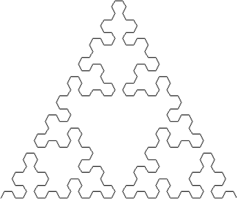
Sierpińského trojúhelník
| abeceda $Σ$ | $\{F, G, +, -\}$ |
|---|---|
| axiom $ω$ | F-G-G |
| přepisovací pravidla $P$ | F → F-G+F+G-F G → GG |
| úhel | 120 ° |
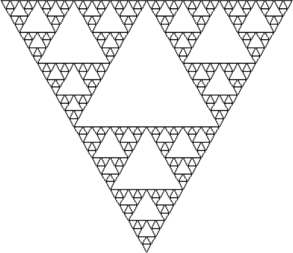
Hilbertova křivka
| abeceda $Σ$ | $\{A, B, F, +, -\}$ |
|---|---|
| axiom $ω$ | A |
| přepisovací pravidla $P$ | A → +BF-AFA-FB+ B → -AF+BFB+FA- |
| úhel | 90 ° |
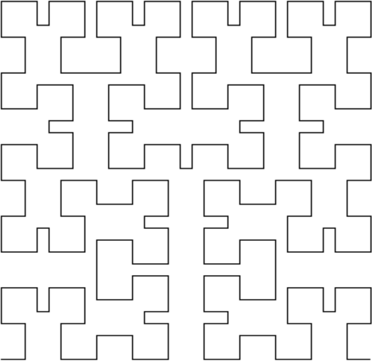
II. Simulace rostlin
Druhou skupinu příkladů tvoří D0L-systémy se zaznamenáváním stavu želvy. Konkrétně nejrůznější variace simulace růstu rostlin, často doplněné o obarvení a tloušťku podle hloubky zanoření výpočtu.
PS: Nezapomeňte, že nejde o stochastické (tedy 0L) systémy, proto nejsou přímo použitelné pro tvorbu rozsáhlejších porostů.
Rostlina 0
| abeceda $Σ$ | $\{F, +, -, [, ]\}$ |
|---|---|
| axiom $ω$ | F |
| přepisovací pravidla $P$ | F → F[+F]F[-F]F |
| úhel | 25.7 ° |
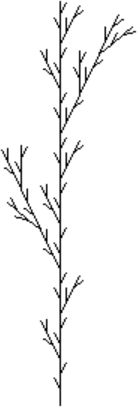
Rostlina 1
| abeceda $Σ$ | $\{A, F, +, -, [, ]\}$ |
|---|---|
| axiom $ω$ | A |
| přepisovací pravidla $P$ | A → F-[[A]+A]+F[+FA]-A F → FF |
| úhel | 27 ° |
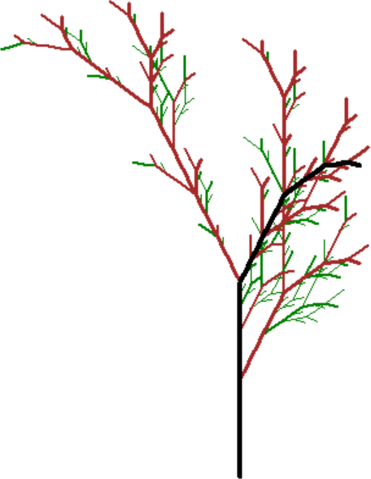
Rostlina 2
| abeceda $Σ$ | $\{F, +, -, [, ]\}$ |
|---|---|
| axiom $ω$ | F |
| přepisovací pravidla $P$ | F → FF+[+F-FF]-[-F+F+F] |
| úhel | 25 ° |
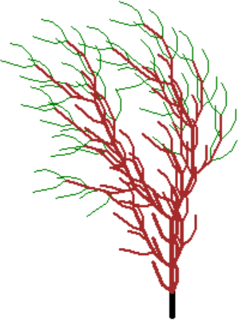
Rostlina 3
| abeceda $Σ$ | $\{A, F, +, -, [, ]\}$ |
|---|---|
| axiom $ω$ | A |
| přepisovací pravidla $P$ | A → F[+A][-A]F[A] F → FF |
| úhel | 25 ° |
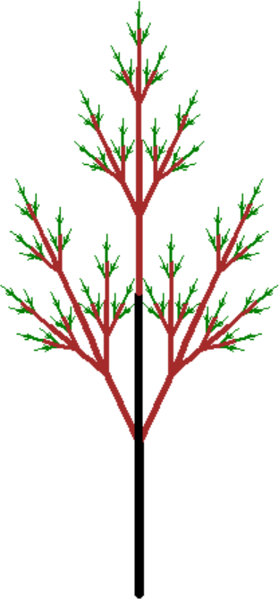
Rostlina 4
| abeceda $Σ$ | $\{A, F, +, -, [, ]\}$ |
|---|---|
| axiom $ω$ | A |
| přepisovací pravidla $P$ | A → F[+A]F[-A]+[A] F → FF |
| úhel | 20 ° |
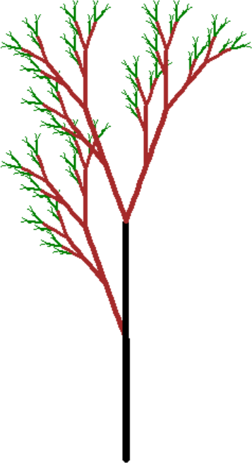
III. Stochastické simulace rostlin
Třetí skupina příkladů jsou stochastické (tedy 0L-systémy) se zaznamenáváním stavu želvy. Obarvení a tloušťka podle hloubky zanoření výpočtu zůstává, ale navíc je možno při generování vybírat z vícero pravidel plus případně při vykreslování nejsou délky a úhly zadány rigidně.
Takovéto systémy se už více hodí pro tvorbu rozsáhlejších porostů, ale musíte vhodně „namíchat“ (ne)determinističnost tvarů rostlin, aby výsledek vypadal dobře.
Rostlina 1
| abeceda $Σ$ | $\{K, F, +, -, [, ]\}$ |
|---|---|
| axiom $ω$ | F |
| přepisovací pravidla $P$ | F → FF[FF--F[+FFF-FK]]+F F → +F[-FFK] F → -F[+FF] F → -FF+FF-F |
| úhel | <15 °, 25 °> |
| krok | <8, 15> |
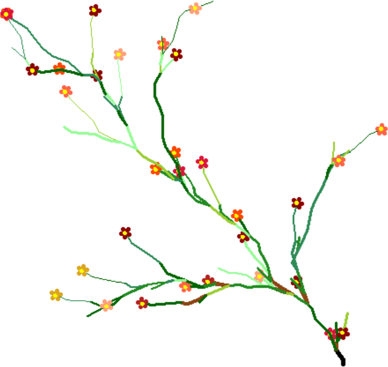
Kromě náhodných pravidel i vykreslování zde autorka pro větší realističnost výsledku nahradila jednu z „větví“ taktéž náhodně obarveným „kvítkem“ (pravidlo K):
# Antónia Cordova Beldumová
zelena = ["darkgreen", "yellowgreen", "seagreen", "forestgreen", "palegreen"]
kvet = ["darkred","orangered","firebrick","tomato", "goldenrod", "lightsalmon",
"crimson"]
def flower():
turtle.pencolor(random.choice(kvet))
turtle.pensize(5)
for i in range (5):
turtle.forward(5)
turtle.backward(5)
turtle.left(360/5)
turtle.pensize(3)
turtle.pencolor("yellow")
turtle.circle(1)
turtle.pencolor(random.choice(zelena))
Rostlina 2
...